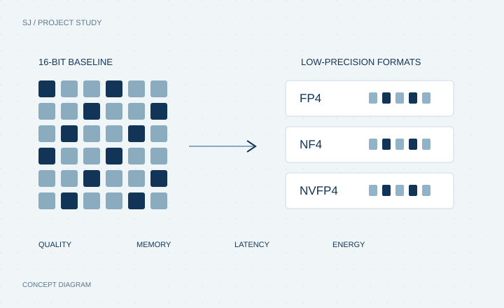

LLM SYSTEMS / CAPSTONE
LLM post-training quantization
Studying the quality and efficiency trade-offs of low-precision large language models.

01 / MOTIVATION
Why this problem?
Large language models demand substantial memory and compute. Lower precision is promising, but its value depends on model quality and the way each workload executes.
02 / THE NEED
What needed to be addressed.
Compare quantized models with 16-bit baselines across quality, memory, latency, throughput, and GPU energy, rather than judging efficiency from model size alone.
03 / THE SOLUTION
How it was approached.
- Benchmarked FP4, NF4, and NVFP4 against 16-bit baselines across Mistral, Llama, Qwen, Phi, and Gemma.
- Measured model quality, GPU memory, latency, throughput, and GPU energy using Python, PyTorch, CUDA, Triton, and NVML.
- Profiled quantized execution paths and repeated probes to examine workload-dependent trade-offs.
04 / OUTCOME & CONTEXT
5 LLM families
FP4, NF4, and NVFP4 compared with 16-bit baselines.
Interpreting the work
The résumé describes the evaluation scope. Aggregate quality, speed, and energy improvements are not published here; no universal efficiency gain is claimed.
Source: Résumé summary · supplied résumé. Motivation and need describe the problem framing.